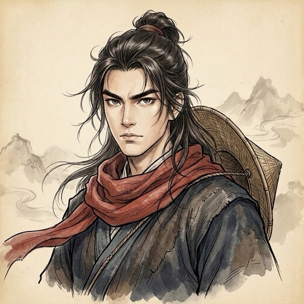
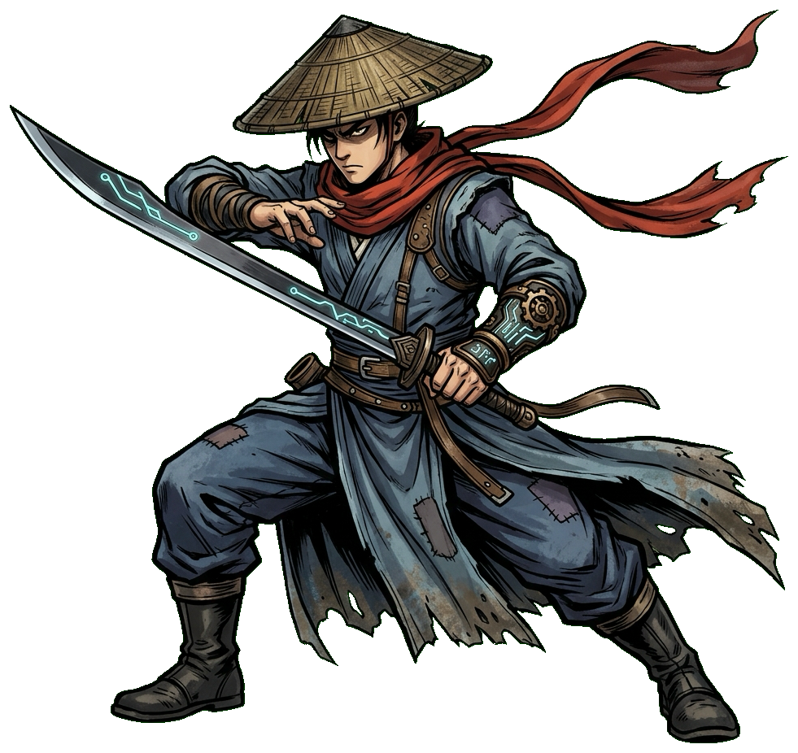

食
100
·
币
80
·
囊
0/10
主线
【第一幕】拜访墨石镇老黄，探寻同伴「阿哲」的下落
警戒 0%
辐射潮 60s
护驾：未出战
墨石镇
第1天
墨石镇域
·
晴朗微风
·
天命 0%
WASD / 方向键行走 · E / 空格 交互 · 点击地面寻路
墨
 墨
墨
商人老黄
墨石镇杂货东家
变异荒原鼠
可收妖
气血
45 / 45
决
我方回合
护盾 0
沈砚
120 / 120
气血
100 / 100
内息
灵
护驾灵兽
协同出战

遭遇强敌！凝神戒备，准备迎战！